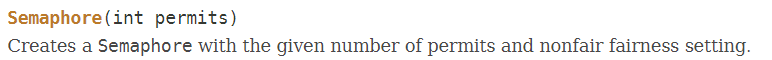
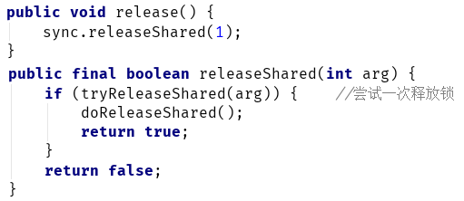
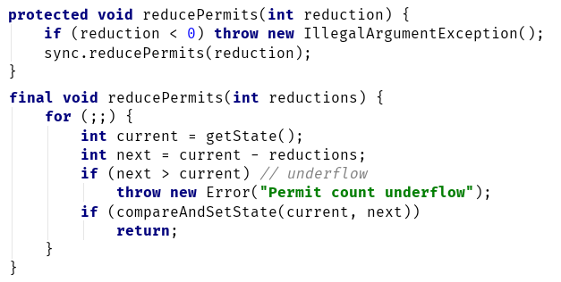

Java多线程进阶（二十）—— J.U.C之synchronizer框架：Semaphore
一、Semaphore简介
Semaphore，又名信号量，这个类的作用有点类似于“许可证”。有时，我们因为一些原因需要控制同时访问共享资源的最大线程数量，比如出于系统性能的考虑需要限流，或者共享资源是稀缺资源，我们需要有一种办法能够协调各个线程，以保证合理的使用公共资源。
Semaphore维护了一个许可集，其实就是一定数量的“许可证”。
当有线程想要访问共享资源时，需要先获取(acquire)的许可；如果许可不够了，线程需要一直等待，直到许可可用。当线程使用完共享资源后，可以归还(release)许可，以供其它需要的线程使用。
另外，Semaphore支持公平/非公平策略，这和ReentrantLock类似，后面讲Semaphore原理时会看到，它们的实现本身就是类似的。
二、Semaphore示例
我们来看下Oracle官方给出的示例：
class Pool {
private static final int MAX_AVAILABLE = 100; // 可同时访问资源的最大线程数
private final Semaphore available = new Semaphore(MAX_AVAILABLE, true);
protected Object[] items = new Object[MAX_AVAILABLE]; //共享资源
protected boolean[] used = new boolean[MAX_AVAILABLE];
public Object getItem() throws InterruptedException {
available.acquire();
return getNextAvailableItem();
}
public void putItem(Object x) {
if (markAsUnused(x))
available.release();
}
private synchronized Object getNextAvailableItem() {
for (int i = 0; i < MAX_AVAILABLE; ++i) {
if (!used[i]) {
used[i] = true;
return items[i];
}
}
return null;
}
private synchronized boolean markAsUnused(Object item) {
for (int i = 0; i < MAX_AVAILABLE; ++i) {
if (item == items[i]) {
if (used[i]) {
used[i] = false;
return true;
} else
return false;
}
}
return false;
}
}
items数组可以看成是我们的共享资源，当有线程尝试使用共享资源时，我们要求线程先获得“许可”（调用Semaphore 的acquire方法），这样线程就拥有了权限，否则就需要等待。当使用完资源后，线程需要调用Semaphore 的release方法释放许可。
注意：上述示例中，对于共享资源访问需要由锁来控制，Semaphore仅仅是保证了线程由权限使用共享资源，至于使用过程中是否由并发问题，需要通过锁来保证。
总结一下，许可数 ≤ 0代表共享资源不可用。许可数 ＞ 0，代表共享资源可用，且多个线程可以同时访问共享资源。这是不是和CountDownLatch有点像？
我们来比较下：
| 同步器 | 作用 |
|---|---|
| CountDownLatch | 同步状态State > 0表示资源不可用，所有线程需要等待；State == 0表示资源可用，所有线程可以同时访问 |
| Semaphore | 剩余许可数 < 0表示资源不可用，所有线程需要等待； 许可剩余数 ≥ 0表示资源可用，所有线程可以同时访问 |
如果读者阅读过本系列的AQS相关文章，应该立马可以反应过来，这其实就是对同步状态的定义不同。
CountDownLatch内部实现了AQS的共享功能，那么Semaphore是否也一样是利用内部类实现了AQS的共享功能呢？
三、Semaphore原理
3.1 Semaphore的内部结构
我们先来看下Semaphore的内部：
可以看到，Semaphore果然是通过内部类实现了AQS框架提供的接口，而且基本结构几乎和ReentrantLock完全一样，通过内部类分别实现了公平/非公平策略。
3.2 Semaphore对象的构造
Semaphore sm = new Semaphore (3, true);
Semaphore有两个构造器：
构造器1：

构造器2：
构造时需要指定“许可”的数量——permits，内部结构如下：
四、Semaphore的公平策略分析
我们还是通过示例来分析：
假设现在一共3个线程：ThreadA、ThreadB、ThreadC。一个许可数为2的公平策略的Semaphore。线程的调用顺序如下：
Semaphore sm = new Semaphore (2, true);
// ThreadA: sm.acquire()
// ThreadB: sm.acquire(2)
// ThreadC: sm.acquire()
// ThreadA: sm.release()
// ThreadB: sm.release(2)
4.1 创建公平策略的Semaphore对象
Semaphore sm = new Semaphore (2, true);
可以看到，内部创建了一个FairSync对象，并传入许可数permits：
Sync是Semaphore的一个内部抽象类，公平策略的FairSync和非公平策略的NonFairSync都继承该类。
可以看到，构造器传入的permits值就是同步状态的值，这也体现了我们在AQS系列中说过的：
AQS框架的设计思想就是分离构建同步器时的一系列关注点，它的所有操作都围绕着资源——同步状态（synchronization state）来展开，并将资源的定义和访问留给用户解决：
4.2 ThreadA调用acqure方法
Semaphore的acquire方法内部调用了AQS的方法，入参"1"表示尝试获取1个许可：
AQS的acquireSharedInterruptibly方式是共享功能的一部分，我们在AQS系列中就已经对它很熟悉了：
关键来看下Semaphore是如何实现tryAcquireShared方法的：
对于Semaphore来说，线程是可以一次性尝试获取多个许可的，此时只要剩余的许可数量够，最终会通过自旋操作更新成功。如果剩余许可数量不够，会返回一个负数，表示获取失败。
显然，ThreadA获取许可成功。此时，同步状态值State == 1，等待队列的结构如下：
4.3 ThreadB调用acqure(2)方法
带入参的aquire方法内部和无参的一样，都是调用了AQS的acquireSharedInterruptibly方法：
此时，ThreadB一样进入tryAcquireShared方法。不同的是，此时剩余许可数不足，因为ThreadB一次性获取2个许可，tryAcquireShared方法返回一个负数，表示获取失败：
$$
remaining = available - acquires = 1- 2 = -1
$$
ThreadB会调用doAcquireSharedInterruptibly方法：
上述方法首先通过addWaiter方法将ThreadB包装成一个共享结点，加入等待队列：
然后会进入自旋操作，先尝试获取一次资源，显然此时是获取失败的，然后判断是否要进入阻塞（shouldParkAfterFailedAcquire）：
上述方法会先将前驱结点的状态置为SIGNAL，表示ThreadB需要阻塞，但在阻塞之前需要将前驱置为SIGNAL，以便将来可以唤醒ThreadB。
最终ThreadB会在parkAndCheckInterrupt中进入阻塞：

此时，同步状态值依然是State == 1，等待队列的结构如下：
4.4 ThreadC调用acqure()方法
流程和步骤3完全相同，ThreadC被包装成结点加入等待队列后：
同步状态：State == 1
4.5 ThreadA调用release()方法
Semaphore的realse方法调用了AQS的releaseShared方法，默认入参为"1"，表示归还一个许可：

来看下Semaphore是如何实现tryReleaseShared方法的，tryReleaseShared方法是一个自旋操作，直到更新State成功：
更新完成后，State == 2,ThreadA会进入doReleaseShared方法，先将头结点状态置为0，表示即将唤醒后继结点：
此时，等待队列结构：
然后调用unparkSuccessor方法唤醒后继结点：
此时，ThreadB被唤醒，会从原阻塞处继续向下执行：
此时，同步状态：State == 2
4.6 ThreadB从原阻塞处继续执行
ThreadB被唤醒后，从下面开始继续往下执行，进入下一次自旋：
在下一次自旋中，ThreadB调用tryAcquireShared方法成功获取到共享资源（State修改为0），setHeadAndPropagate方法把ThreadB变为头结点，并根据传播状态判断是否要唤醒并释放后继结点：
同步状态：State == 0
ThreadB会调用doReleaseShared方法，继续尝试唤醒后继的共享结点（也就是ThreadC），这个过程和ThreadB被唤醒完全一样：

同步状态：State == 0
4.7 ThreadC从原阻塞处继续执行
由于目前共享资源仍为0，所以ThreadC被唤醒后，在经过尝试获取资源失败后，又进入了阻塞：
4.8 ThreadA调用release(2)方法
内部和无参的release方法一样：
更新完成后，State == 2,ThreadA会进入doReleaseShared方法，唤醒后继结点：
此时，等待队列结构：
同步状态：State == 2
4.9 ThreadC从原阻塞处继续执行
由于目前共享资源为2，所以ThreadC被唤醒后，获取资源成功：
最终同步队列的结构如下：
同步状态：State == 0
五、总结
Semaphore其实就是实现了AQS共享功能的同步器，对于Semaphore来说，资源就是许可证的数量：
- 剩余许可证数（State值） - 尝试获取的许可数（acquire方法入参） ≥ 0：资源可用
- 剩余许可证数（State值） - 尝试获取的许可数（acquire方法入参） < 0：资源不可用
这里共享的含义是多个线程可以同时获取资源，当计算出的剩余资源不足时，线程就会阻塞。
注意：Semaphore不是锁，只能限制同时访问资源的线程数，至于对数据一致性的控制，Semaphore是不关心的。当前，如果是只有一个许可的Semaphore，可以当作锁使用。
5.1 Semaphore的非公平策略
另外，上述我们讨论的是Semaphore的公平策略，非公平策略的差异并不大：
可以看到，非公平策略不会去查看等待队列的队首是否有其它线程正在等待，而是直接尝试修改State值。
5.2 Semaphore的其它方法
Semaphore还有两个比较特殊的方法，这两个方法的特点是采用自旋操作State变量，直到成功为止。所以，并不会阻塞调用线程。
reducePermits

reducePermits立即减少指定数目的可用许可数。
drainPermits
drainPermits方法用于将可用许可数清零，并返回清零前的许可数